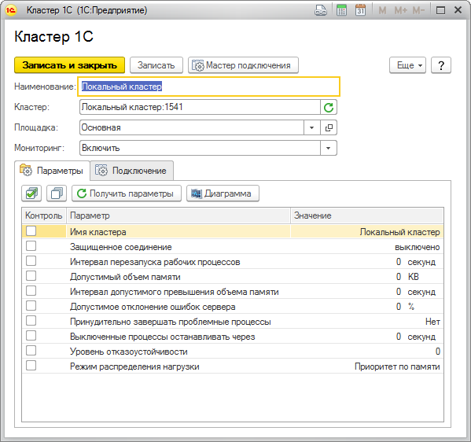
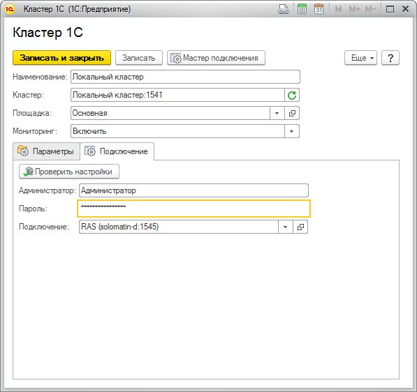
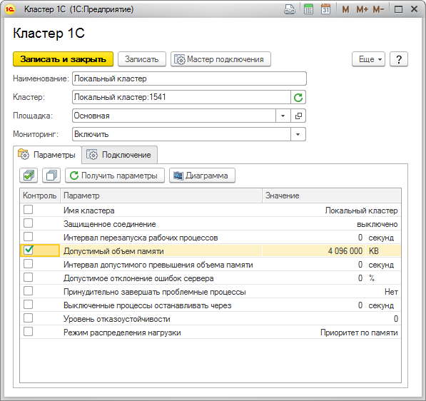
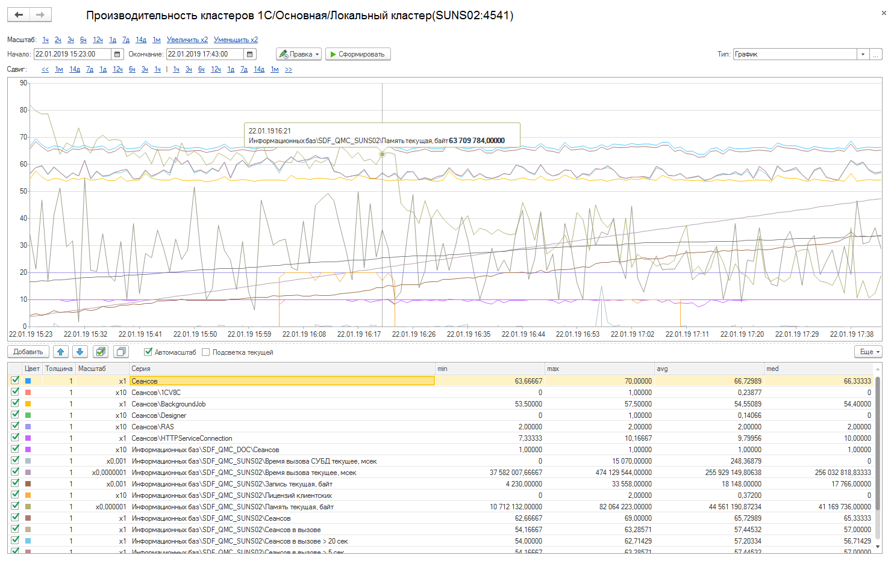

Данная форма позволит вам заполнить настройки подключения к кластеру серверов 1С, указать какие параметры кластера необходимо контролировать.

Поле "Наименование" обязательно для заполнения.
Мониторинг кластера осуществляется через удаленный сервер администрирования (RAS). Для возможности мониторинга кластера обязательно наличие запущенного RAS. Приложение RAS может быть запущено консольное приложение, так и как служба.
Пример запуска RAS в консоли для ОС Windows:
"C:\Program Files\1cv8\8.3.11.2899\bin\ras.exe" cluster --port=1545 localhost:1540
Пример создания службы RAS для ОС Windows:
sc create "1C:Enterprise 8.3.11.2899 RAS (x86-64)_1545" binPath= "\"C:\Program Files\1cv8\8.3.11.2899\bin\ras.exe\" cluster --service --port 1545 localhost:1540" DisplayName= "1C:Enterprise 8.3.11.2899 RAS (x86-64)_1545" type= own start= demand
После создания службы необходимо открыть ее в оснастке "Службы" и установить необходимые настройки.
Для проверки корректности запуска RAS можно выполнить в консоли следующую команду на компьютере, где запущен RAS:
"C:\Program Files\1cv8\8.3.11.2899\bin\rac.exe" localhost:1545 cluster list
Пример результата выполнения команды:
cluster : c4aff0df-4547-42e1-a419-8220791af07a
host : localhost
port : 1541
name : "Локальный кластер"
expiration-timeout : 5
lifetime-limit : 0
max-memory-size : 4097152
max-memory-time-limit : 60
security-level : 0
session-fault-tolerance-level : 0
load-balancing-mode : performance
errors-count-threshold : 0
kill-problem-processes : 0
Мониторинг кластера может осуществляться либо непосредственно из ЦКК (подходит для мониторинга небольшого количества кластеров), либо агентом ЦКК. Настройка производится на закладке "Подключение", где необходимо заполнить параметры аутентификации, выбрать подключение, через которое будет осуществляться мониторинг кластера, а так же сам кластер. Более простой путь - настроить подключение с помощью мастера подключения.

После настройки подключения необходимо настроить параметры кластера, значения которых необходимо контролировать.

В данном случае, если настройка "Допустимый объем памяти", полученная при мониторинге кластера будет отличаться от указанного значения, то будет создан инцидент с уровнем "Предупреждение". При возвращении значения к эталонному инцидент автоматически будет закрыт.
При корректной настройке подключения к кластеру при записи элемента отдельным фоновым заданием будет прочитана структура кластера. Рабочие сервера и информационные базы будут созданы автоматически, после завершения фонового задания. При мониторинге кластера (мониторинг осуществляется контрольной процедурой "Мониторинг кластера") структура в ЦКК автоматически синхронизируется со структурой объекта мониторинга, собираются счетчики производительности кластера 1С.
Быстрый переход к основным счетчикам производительности кластера 1С осуществляется по кнопке "Диаграмма".
